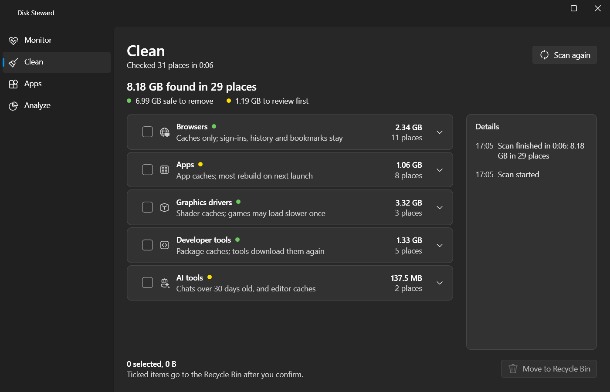
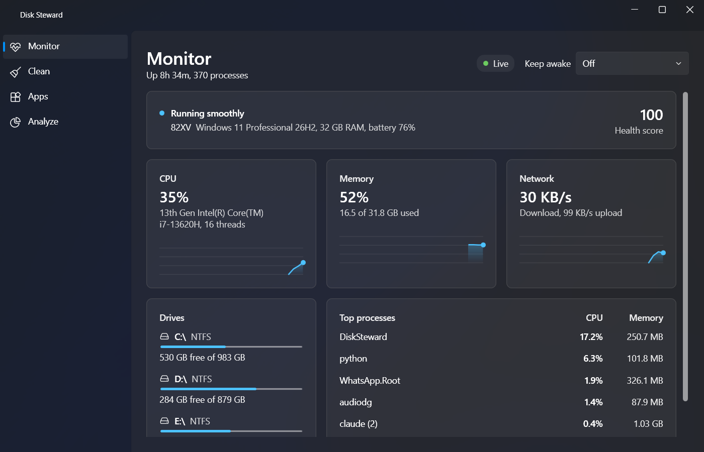
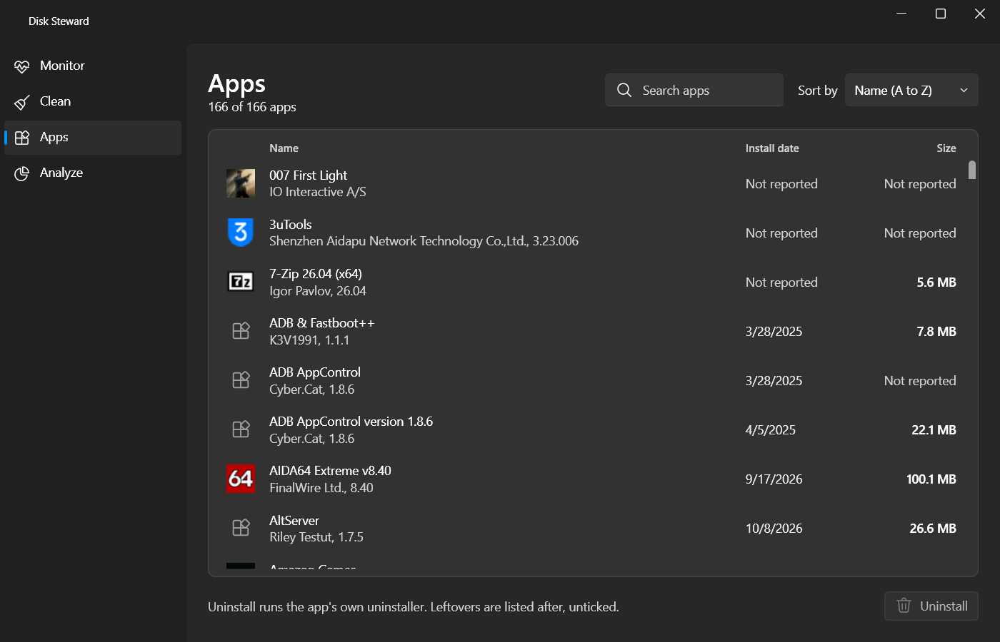
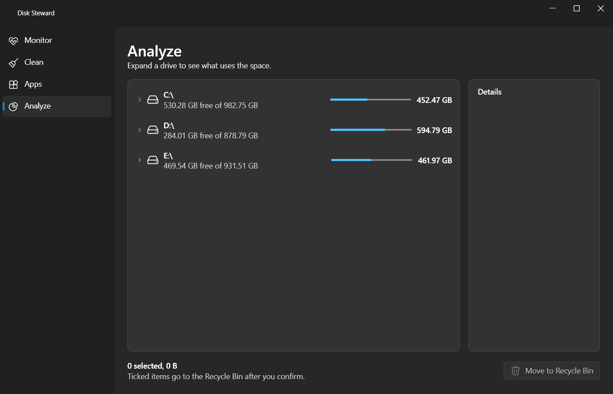

Clean
Scans on open. Browser caches leave sign-ins, history and bookmarks alone.
Safe to removeReview first
A native Windows app for cache cleanup, app uninstall with leftover cleanup, a disk usage tree and a live system monitor. Every removal goes to the Recycle Bin, and it runs as you, never elevated.

One guard, SafeRemover, handles every removal. It checks each path again at the moment of removal, so a cache path cannot be redirected into something that matters.
Nothing is removed without a tick and a confirmation. Nothing starts ticked.
Junctions and links are resolved to the real path before anything moves.
The path is checked against ProtectedPaths again, right then.
A drive without a Recycle Bin is refused rather than deleted from.
The item is moved there. You can restore it.
A folder that cannot be removed shows as a locked row that explains itself, not an error. In Clean, each item is marked safe to remove or worth a review first, and Claude Code memory is never offered.
Monitor opens first and samples while the page is open. Clean, Apps and Analyze find space and hand you the choice.

Scans on open. Browser caches leave sign-ins, history and bookmarks alone.
Safe to removeReview first

Sort by name, size or install date. Uninstall runs the app's own uninstaller, waits until Windows no longer lists it, then offers leftover folders, unticked. Store apps are not listed.

A tree of drives and folders with used space against capacity. Folders list at once and measure in the background.
| Clean group | What it covers |
|---|---|
| System | Temp files, error reports and logs over a week old |
| Browsers | Caches only; sign-ins, history and bookmarks stay |
| Apps | App caches; most rebuild on next launch |
| Graphics drivers | Shader caches; games may load slower once |
| Developer tools | Package caches; tools download them again |
| AI tools | Chats over 30 days old (Claude Code, Codex) and editor caches such as Cursor |
Install the MSI from the release, or build it yourself with the .NET 10 SDK.
Needs the .NET 10 SDK version pinned in global.json. Each script takes --no-pause to skip the final key press.
| Script | Purpose |
|---|---|
run.bat | Run the app in Debug |
build.bat | Publish DiskSteward.exe to artifacts\publish\win-x64 |
test.bat | Run all tests |
package.bat | Test, build and create the MSI in artifacts\installer |